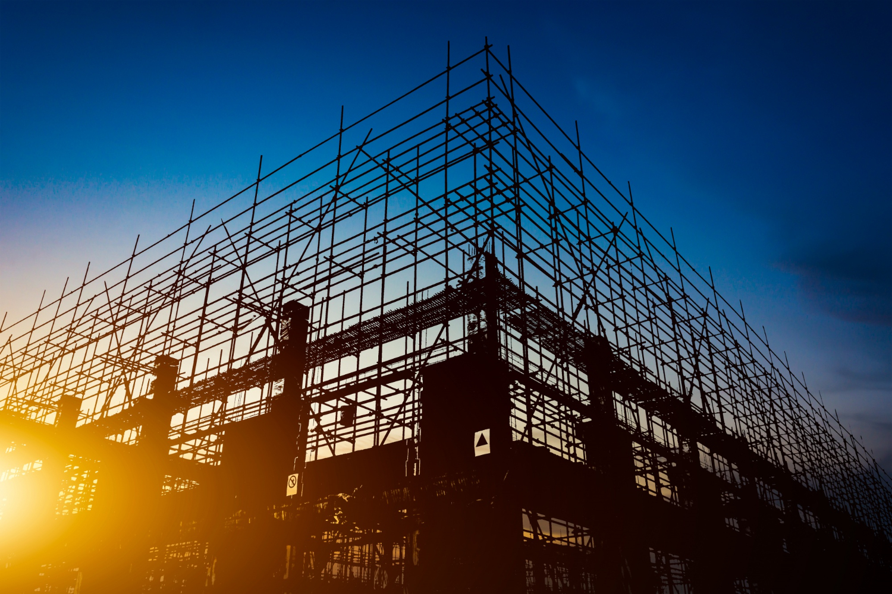

Infrastructure forms the backbone of society, facilitating economic activities, connecting communities, and improving quality of life. Roads, transportation systems, power grids, and digital networks are essential for economic stability and prosperity. However, many parts of the world still lack access to basic infrastructure.
Why Sustainable Infrastructure is Crucial :
- Connectivity: Well-developed infrastructure links rural and urban areas, improving trade and accessibility.
- Economic Development: Investments in infrastructure boost GDP, attracting businesses and investors.
- Disaster Resilience: Climate-resilient infrastructure minimizes damage from natural disasters.
- Quality of Life: Access to clean water, electricity, and internet improves overall well-being.
Infrastructure Challenges Worldwide :
- Poor Road & Transport Systems: Many developing countries lack reliable transportation networks.
- Energy Inequality: Over 700 million people still lack access to electricity.
- Digital Divide: Nearly 3 billion people remain without internet access, limiting education and job opportunities.
- Aging Infrastructure: Many developed nations face challenges in modernizing outdated infrastructure.
Sustainable Infrastructure Solutions :
- Green Infrastructure: Using renewable energy grids, smart transport systems, and sustainable urban planning.
- Expanding Digital Access: Investing in 5G technology and fiber-optic networks for better global connectivity.
- High-Speed Rail & Public Transport: Reducing reliance on fossil-fuel-based transportation.
- Smart Water Management: Implementing systems to conserve and efficiently distribute clean water.
Did you know?
- Countries investing in modern infrastructure see a 5% increase in economic growth over a decade.
- Over 60% of the world’s population will live in cities by 2030, increasing the need for sustainable urban development.
